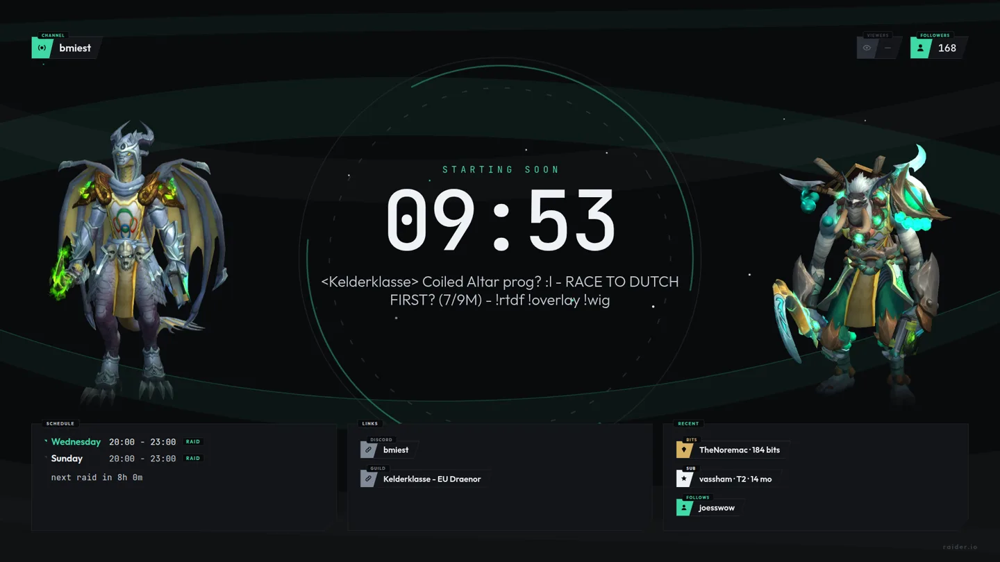
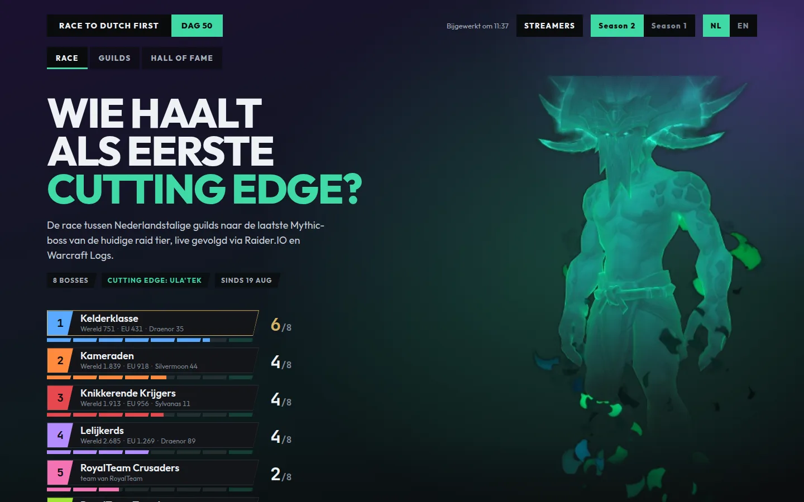
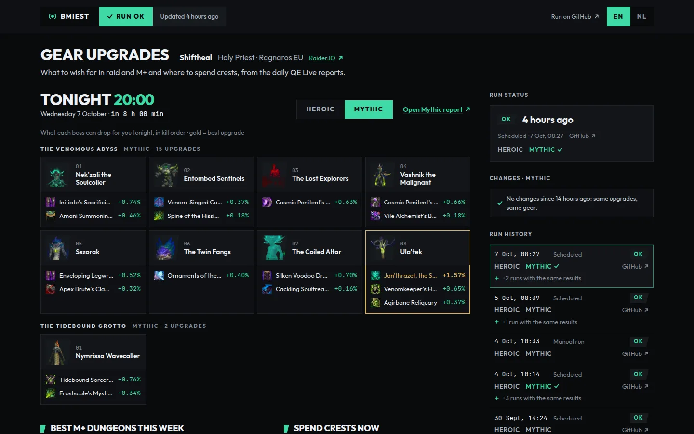

Raid night, Wed + Sun
Mythic progression with Kelderklasse, healing as Shiftheal, the Holy Priest. The race to Dutch first runs on screen all night.
- Next raidWed + Sun 20:00
- Now onThe Venomous Abyss
- ShifthealHoly Priest
World of Warcraft raider on Twitch. Mythic progression with Kelderklasse, and the tools behind the stream, built by hand.
Mythic progression with Kelderklasse, healing as Shiftheal, the Holy Priest. The race to Dutch first runs on screen all night.

The OBS overlay this channel runs on: full-width bands around an ultrawide game window, a raid card fed by Warcraft Logs and Raider.IO, and fireworks when a boss dies.

Which Dutch guild reaches Cutting Edge first? A live tracker for every Dutch-speaking guild, built from Raider.IO and Warcraft Logs, refreshed every half hour on raid nights.

Fills in your WoWAudit wishlist from the daily QE Live reports, because everyone forgets before raid and the officers get mad. A dashboard shows what each boss drops for you tonight.
One language for the overlay, the race and the wishlist: flat ink, slanted edges, jade for live and gold only when it's earned. This page is built from it too.